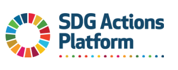

Goals - N1
End poverty in all its forms everywhere

TARGETS AND INDICATORS

The SDG Actions Platform is a global registry of voluntary policies, commitments, multi-stakeholder partnerships and other initiatives made by governments, the UN system and a broad range of stakeholders to support acceleration of the UN Sustainable Development Goals (SDGs).
------------------------------------------------------------------------------------------------------------------------
This is SDG17 graph
I will introduce SDG17 Number 1 = No Poverty
OVERVIEW

- Target[1.1]
By 2030, eradicate extreme poverty for all people everywhere, currently measured as people living on less than $1.25 a day.
- Target[1.2]
By 2030, reduce at least by half the proportion of men, women and children of all ages living in poverty in all its dimensions according to national definitions.
- Target[1.3]
Implement nationally appropriate social protection systems and measures for all, including floors, and by 2030 achieve substantial coverage of the poor and the vulnerable.
- Target[1.4]
By 2030, ensure that all men and women, in particular the poor and the vulnerable, have equal rights to economic resources, as well as access to basic services, ownership and control over land and other forms of property, inheritance, natural resources, appropriate new technology and financial services, including microfinance.
- Target[1.5]
By 2030, build the resilience of the poor and those in vulnerable situations and reduce their exposure and vulnerability to climate-related extreme events and other economic, social and environmental shocks and disasters.
- Target[1.a]
Ensure significant mobilization of resources from a variety of sources, including through enhanced development cooperation, in order to provide adequate and predictable means for developing countries, in particular least developed countries, to implement programmes and policies to end poverty in all its dimensions.
- Target[1.b]
Create sound policy frameworks at the national, regional and international levels, based on pro-poor and gender-sensitive development strategies, to support accelerated investment in poverty eradication actions.
PROGRESS AND INFO
2016
Goal 1 calls for an end to poverty in all its manifestations by 2030. It also aims to ensure social protection for the poor and vulnerable, increase access to basic services and support people harmed by climate-related extreme events and other economic, social and environmental shocks and disasters.

2017
Despite the fact that the global poverty rate has been halved since 2000, intensified efforts are required to boost the incomes, alleviate the suffering and build the resilience of those individuals still living in extreme poverty, in particular in sub-Saharan Africa. Social protection systems need to be expanded and risks need to be mitigated for disaster-prone countries, which also tend to be the most impoverished.
2018
While extreme poverty has eased considerably since 1990, pockets of the worst forms of poverty persist. Ending poverty requires universal social protection systems aimed at safeguarding all individuals throughout the life cycle. It also requires targeted measures to reduce vulnerability to disasters and to address specific underserved geographic areas within each country.

2019
The decline of global extreme poverty continues, but has slowed. The deceleration indicates that the world is not on track to achieve the target of less than 3 per cent of the world living in extreme poverty by 2030. People who continue to live in extreme poverty face deep, entrenched deprivation often exacerbated by violent conflicts and vulnerability to disasters. Strong social protection systems and government spending on key services often help those left behind get back on their feet and escape poverty, but these services need to be brought to scale.
2020
Even before the pandemic, the pace of global poverty reduction was decelerating, and it was projected that the global target of ending poverty by 2030 would be missed. The pandemic is pushing tens of millions of persons back into extreme poverty, undoing years of progress. While the pandemic has highlighted the need to strengthen social protection and emergency preparedness and response, those measures are insufficient to safeguard the poor and the vulnerable, who most need them.
2021
The slowdown in progress on poverty reduction since 2015 has been further set back by the COVID-19 pandemic, with the global rate of extreme poverty rising in 2020 for the first time in over 20 years. The triple threat of COVID-19, conflict and climate change makes the global goal of ending poverty by 2030 unachievable unless immediate and substantial policy actions are taken. The COVID-19 crisis has demonstrated the importance of social protection systems for protecting health, employment and income, with many new social protection measures introduced in 2020 as a result. However, 4 billion people worldwide are still without any social protection, most of whom are poor and vulnerable.

2022
The impact of the COVID-19 pandemic reversed the steady progress of poverty reduction over the past 25 years. This unprecedented reversal is being further exacerbated by rising inflation and the impacts of the war in Ukraine. It is estimated these combined crises will lead to an additional 75 million-95 million people living in extreme poverty in 2022 compared with pre-pandemic projections. Almost all countries have introduced new short-term social protection measures in response to the COVID-19 crisis to protect people’s health, jobs and income. If these measures continue, they will provide the needed assistance for the poor and help them move out of poverty
2023
Since 2015, global poverty reduction was already slowing down and the impacts of the COVID-19 pandemic reversed three decades of steady progress with the number of people living in extreme poverty increasing for the first time in a generation. Recovery from the pandemic has been slow and uneven as the world is presently facing multiple geopolitical, socioeconomic, and climatic risks. Given current trends, 575 million people (nearly 7% of the world’s population) will still be living in extreme poverty in 2030 compared to 800 million in 2015 (or 10.8%). Eradicating extreme poverty will be particularly difficult in sub-Saharan Africa and conflict-affected areas. Despite the expansion of social protection during COVID-19, over 4 billion people globally remain entirely unprotected. A surge in action and investment to enhance job opportunities and extend social services to the most excluded is crucial to delivering on the central commitment to ending poverty.

Video

SEHO Jeong